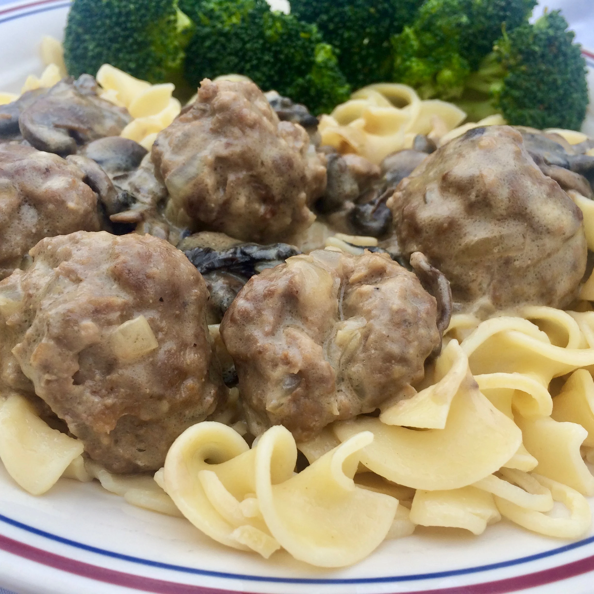

Beef Stroganoff with Meatball

Classic beef stroganoff sauce with meatballs. Serve over rice or egg
noodles.
Ingredients
- 1/2 teaspoon vegetable oil, or as needed
- 1 pound ground sirloin
- 3 tablespoons Worcestershire sauce
- 1 egg
- 1/3 cup dry bread crumbs
- 1/2 small onion, chopped
- salt and ground black pepper to taste
- 1/4 cup butter, divided
- 1 (16 ounce) package mushrooms, sliced
- 2 tablespoons all-purpose flour
- 1 (10.5 ounce) can beef broth
- 1 teaspoon ground mustard
- 1/3 cup sour cream
Directions
-
Preheat the oven to 350 degrees F (175 degrees C). Coat a baking sheet
with oil.
-
Combine ground sirloin, Worcestershire sauce, egg, bread crumbs, onion,
salt, and pepper in a bowl. Mix well. Divide into golf ball-sized
meatballs. Place on the prepared baking sheet.
-
Bake in the preheated oven until meatballs are no longer pink in the
center, about 15 minutes.
-
Melt 2 tablespoons butter in a large skillet over medium heat. Add
mushrooms; cook and stir until soft, about 10 minutes. Push mushrooms to
the side of the pan.
-
Melt remaining 2 tablespoons butter in the skillet; whisk in flour. Add
broth and mustard; bring to a boil. Add meatballs and cook until some
sauce is absorbed, 10 to 15 minutes. Remove from heat. Add sour cream
and stir to combine.